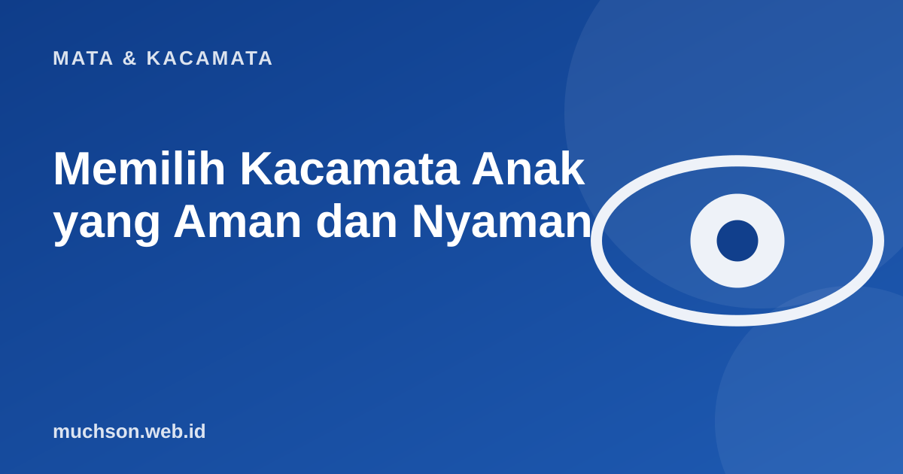

Beranda › Artikel › Mata & Kacamata
Mata & KacamataMemilih Kacamata Anak yang Aman dan Nyaman
Kacamata anak harus kuat, ringan, pas, dan membuat anak mau memakainya. Pilihan yang tepat bukan yang paling mahal, melainkan yang sesuai ukuran wajah dan kebiasaan anak.

Yang paling penting: pas dan nyaman
Daftar periksa saat memilih
Agar anak mau memakainya
- Libatkan anak memilih model.
- Jelaskan kegunaannya dengan bahasa sederhana: supaya dapat melihat papan tulis, bukan hukuman.
- Biarkan beradaptasi bertahap pada hari-hari pertama.
- Berikan contoh: orang dewasa yang berkacamata dengan sikap positif.
- Beri penghargaan kecil saat memakainya konsisten.
Perawatan dan kontrol
| Hal | Anjuran |
|---|---|
| Pemeriksaan mata | Setiap 6-12 bulan atau sesuai saran dokter |
| Penyetelan frame | Rutin, terutama saat anak bertumbuh |
| Kacamata cadangan | Pertimbangkan bila minus tinggi atau anak sangat aktif |
| Membersihkan | Ajarkan membersihkan dengan lap microfiber, jangan baju |
Perhatikan
Kacamata yang tidak pas bisa tergelincir sehingga anak melihat melalui bagian lensa yang salah, atau melepasnya karena tidak nyaman. Penyetelan rutin di optik sering menyelesaikan masalah ini.
Tanya jawab
Apakah anak perlu lensa blue light?
Manfaat lensa blue light belum terbukti kuat. Untuk anak, kebiasaan layar yang sehat dan waktu di luar ruangan lebih penting.
Kapan kacamata anak perlu diganti?
Saat ukuran berubah, frame tidak pas karena pertumbuhan, atau lensa rusak. Kontrol berkala membantu menentukan.
Apakah anak boleh bermain olahraga dengan kacamata?
Gunakan frame lentur dan tali pengikat, dan pertimbangkan pelindung mata khusus untuk olahraga kontak.